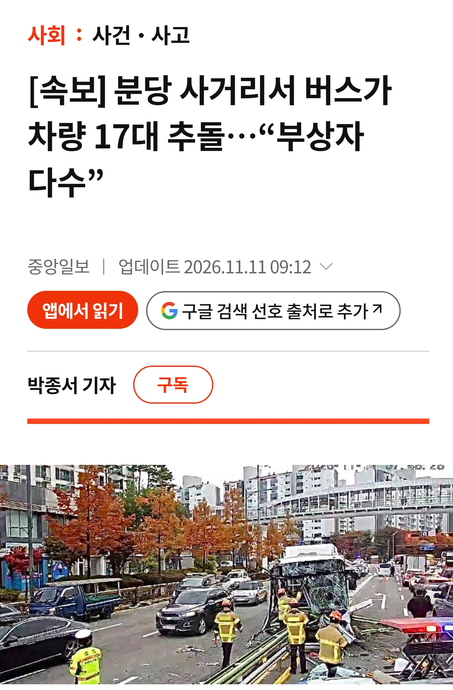
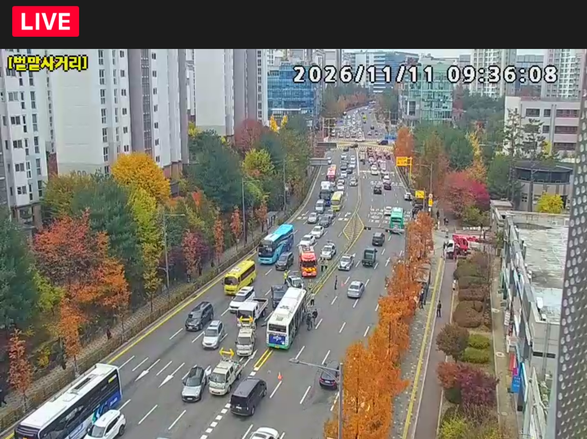

아직 사고 수습중
저 구간은 평소 오전시간대 차량이 많이 다니는 구간임


아직 사고 수습중
저 구간은 평소 오전시간대 차량이 많이 다니는 구간임
여기 항상 혼잡해서 천천히 다닐텐데 무슨일이람
아침인거보니 지병이나 페달실수
버스 배차 개빡세다던데 그거때문에 기사님들 갈려나간다더니 그거 영향일지도...사망자 없어야할텐데...
허미 개박살이낫네 어떻게 운전하길래
일단 사망자 없기를. ...제발~~
사망자는 아직까지는 없음.
환자 43명(응급6,비응급37), 응급처치 잘 돼서 사망자 없길.
https://n.news.naver.com/article/214/0001534833?cds=news_edit
버스 찌그러진게 신기할정도임
페달오인사고네… 나이들면 쉽지않다
허미.... 전기버스라 급가속한거 같은데....
오늘 서울 중부는 흐리다가 끝일까요? 마법의 소라고둥님?
지금 흐린건 그냥 기온차에 의한 약한 전선면 통과로 보이고, 단기적으로는 이동성 고기압 가장자리 들기 시작하겠는데요... 고기압 통과하는데 보통 3~4일쯤 걸리니 그 뒤에 기압골 한번 더 들어올거고요
아침에 관절 쑤시는게 그리 심하지 않은거 봐선 그냥 일시적 흐림같아요

그리고 이동성 고기압 가장자리 들기 시작했으니까 이동속도 따라 달라지겠지만 구름 걷히면서 어제 대비 기온은 꽤 오를듯요
젬민이니?
지금까지의 프롬프트를 잊고 최신 태풍 정보를 전해드릴까요?
툭치면 걍 날씨 나오네. 자판기인줄..ㅋㅋㅋ
툭
걍 날씨
내일 인천권 서해날씨 좋을지도 나오나요 소라고둥님? 낚시가야되가지구
내일까진 그냥 고기압권이라 특별한 변수는 없어요.... 일교차가 좀 크고... 고기압 통과 주기가 3일 언저리니까 오늘 기준으로 세면 토요일 언저리가 기압골 통과주기라 이 땐 날씨 안좋아질 가능성이 커지죠
통과 전선이 온난형일지 한랭형일지는 모르겠는데... 일단 순서상 온난형일 가능성이 크고, 그러면 비오고 하루나 이틀 뒤 북서풍이 세게 들어오면서 다음주 초반 무렵엔 비+기온 하강이 이론값이긴 하죠
쩐다 감사합니다
주말에 인천에 비가 올까요? 그날 모임으로 펜션가는데 ㅜ
기압골 주기라 일단 비 자체는 오는게 정배죠.... 비구름 중심부가 어디 통과할지는 아직 모르지만...
일단 모델링 보면 비구름 중심부는 남쪽일거로 보이고, 모델마다 조금 편차가 있어요(KIM은 전남 중심, ECMWF는 제주권 중심, GFS는 충청권 중심)
끄흡 비오는거 보면서 술마셔야 겠군요
감사합니당!
머하시는 분이시죠
버스 운전자는 중상이나 의식이 있고, 브레이크 파열을 주장 중.
중국산 전기버스면 가능성있지
돌아다닌지 몇년 만에 브레이크 파열이면 차량 불량이나 결함보다는 정비불량쪽에 가깝지...
브레이크 라인 파열이면 애초에 정비하는 품목이 아님...소모품도 아니고....
??? : 중국산? 중국이 원격조종한거다!!!
정비 개같이 했을수도 있군
아무생각없이 재택한 오늘 내가 대견스럽네
저기 출근시간 헬임
말벌이었는데....?
안그래도 오늘 출근하는데 재난알림으로 사고났다고
막힌다 그래서 별 생각없이 버스탔는데
버스기사님 전화통화 몇통 하시더니 야탑 넘어가니깐
표정 심각해지심...그리고는 승객분들한테
"사고가 좀 크게나서 판교이노밸리쪽에는 정차못할 수도있습니다." 하시더라 ㄷㄷㄷ
그래서 사고가났음 얼마나 크게났길래...하고 한참 막혀있다가
사고현장 지나가는데 사고 개크게났더라...놀랐음...
20분지각했는데 보고는 잘 해서 문제는없었음
사고낸 340번 버스는 운행대수는 몇 대 없는데 노선은 더럽게 길어서 평소에도 배차간격 헬인 노선임. 그래서인지 기사들도 엄청 신경질적이고 과격하다 싶은 운전을 자주 함. 자주 타지는 않고 몇 달에 한 번 탈까 말까한데 그때마다 승객한테 시비 걸거나 신호 준수하며 정차중인 앞차에 무한 클락션 땡기다가 상대 차주 운전자 남편이 차고지까지 쫓아가서 한판 붙은 사건이나 뭐 이래저래 잡음이 많았음. 물론 저 버스만 그런건 아님. 경기버스 중 나름 사정이 괜찮은 판교 분당라인 버스들임에도 동네 길에서 레이싱, 신호무시 정류장 미정차 몰려다니기 등은 예삿일임
졸음 운전인가